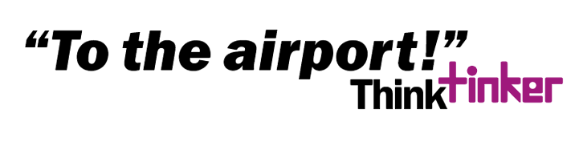

Voor de eindopdracht moesten we de website van Tinker opnieuw ontwerpen. Wij hebben vooral het boekingsformulier veranderd. Dit hebben we gedaan door het ontwerp rustiger te maken en door enkele aanpassingen. Zo hebben we een statusbar toegevoegd aan de website. Op deze manier zullen mensen sneller het boekings formulier helemaal invullen. Dit hebben we gebaseerd op het goal-gradient principe. Daarnaast hebben we ook de verschillende klassen die je kan kiezen op het boekingsformulier veranderd. Zo hebben we de economy plus als de meest gekozen optie aangeduid. Volgens het consensus principe van Cialdini zullen er meer mensen hierdoor voor economy plus kiezen.
